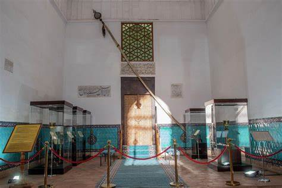
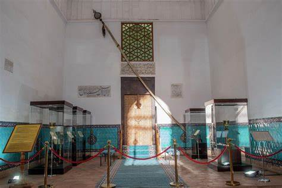

Mausoleum of Khoja Ahmed Yassawi – Spiritual Symbol of Kazakhstan
The Mausoleum of Khoja Ahmed Yassawi is one of the most significant monuments of Islamic architecture in Central Asia. Built in the 14th century by order of Emir Timur, the mausoleum became the spiritual center of Turkistan and the entire region.
- Year built: 1385
- Style: Timurid architecture
- Material: brick, glazed tiles
- UNESCO Site: Included in the World Heritage List
What to See?
- 🛠A massive dome 38 meters high
- 🕌 Mausoleum, mosque, and museum in one complex
- 📖 Sacred manuscripts, relics, and burial chambers
How to Get There?
📠Turkistan city, Arystanbab Street
🚕 Taxi or minibus from the city center
🚆 Train or bus from Shymkent and other regions
Useful Info
ⰠOpening hours: 09:00–18:00 (daily)
🎟️ Entry: 1,000–1,500 KZT
📸 Photography and filming allowed
The Yassawi Mausoleum is not just a historical site, but a living center of spirituality, culture, and heritage of the Kazakh people.
PHOTOS

 
